Nutrition & Feeding · Feed Quality for Cattle & Buffaloes
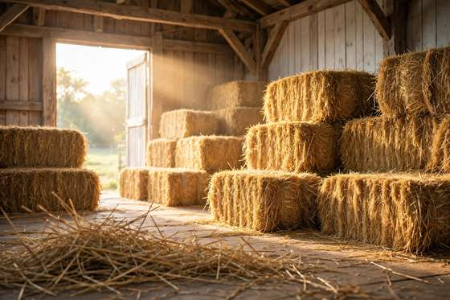
Good-quality hay, dry and golden — the foundation of profitable feeding
Feed is the largest cost on any dairy farm — usually more than half of all production costs. The quality of that feed decides how much milk a cow gives, how healthy she stays, and how much profit the farm makes. Good feed, well stored, keeps its nutrients; poor feed, badly stored, loses nutrients, grows mould and can even make animals sick.
This guide explains how to make good hay, how to judge silage quality, how to store every kind of feed safely, how to recognise mould and mycotoxin danger, and how to check feed quality on the farm and in the laboratory. It is written for dairy farmers, livestock owners and veterinary students — with practical steps that work on small farms as well as large ones.
Why Feed Quality Decides Milk and Profit
A cow can only produce milk from the nutrients she actually eats and digests. When feed quality falls, milk yield falls with it — even if the animal eats the same amount. Poor-quality feed is also less palatable, so animals eat less, lose body condition and become more open to disease.
High-quality feed — more digestible energy and protein per kg, higher intake, more milk, better fertility
Low-quality feed — more indigestible fibre, lower intake, less milk, more feed wasted
Spoiled feed — mould and mycotoxins reduce intake, damage health and can pass into milk
Every kilogram of feed lost to spoilage, rain, rodents or heating is money lost. Protecting feed quality — from cutting to feeding — is one of the cheapest ways to raise farm profit.
Hay Making and Hay Quality
Hay is green fodder dried in the field until it can be stored safely without moulding. Good hay keeps much of the feeding value of fresh fodder and provides dry feed through winter and fodder shortages.
Cutting stage
Cut at the right growth stage — this matters more than anything else. Legumes such as berseem and lucerne should be cut at early bloom; grasses such as oats and ryegrass at the boot to early-heading stage. As plants mature, protein falls and indigestible fibre rises, so late-cut hay is always lower in quality, however well it is dried.
Drying
Cut fodder in dry, sunny weather. Spread it thinly, turn it once or twice so it dries evenly, and avoid leaving it on wet ground. Rain during drying leaches out nutrients and causes mould — a single heavy shower can spoil a whole cutting.
Baling
Bale only when the moisture is below 20 percent, ideally around 15 to 18 percent. Hay baled too wet heats up in the stack, grows mould and loses nutrients — and in severe cases can catch fire through spontaneous heating. Check moisture with a probe before baling, and never stack damp bales with dry ones.
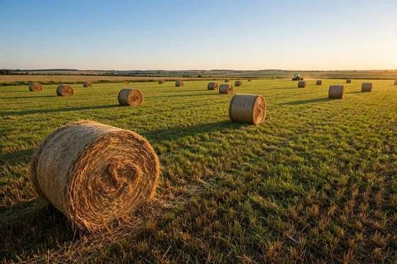
Round bales in the field — bale only when moisture is below 20%
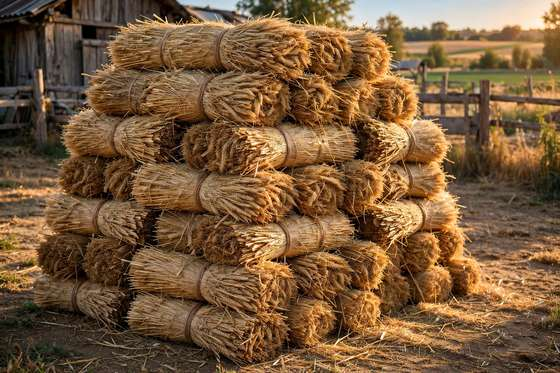
Dry straw and fodder, stacked neatly and kept off damp ground
Silage Quality — Summary
Silage is fermented green fodder preserved under airtight (anaerobic) conditions. Lactic acid bacteria convert plant sugars into lactic acid, lowering the pH and preserving the fodder for months. Good silage is golden, has a pleasant acidic smell and a pH of about 3.8 to 4.2. Spoiled silage shows mould, heating, dark discoloration or a rotten smell — and must never be fed.
Bunker silo sealed airtight — plastic sheet, sealed edges, tyres on top
Storage Methods
Every feed — hay, straw, grain, concentrates and silage — needs dry, clean, pest-free storage. The right method depends on the feed type and the farm's size.
1
Barns and sheds(The best storage for hay and straw — a roof, dry floor and good ventilation. Keep bales off the ground on pallets or a raised platform)
2
Outdoor stacks(Hay and straw stacks in the open must be covered with a waterproof tarpaulin and built on a raised, well-drained base. Uncovered stacks lose far more feed to rain and sun)
3
Bunker silos and pits(For silage — concrete or lined pits, filled in thin layers, compacted and sealed airtight with plastic sheeting)
4
Plastic bags and bale wrapping(Silage bags and wrapped round bales suit small farms — easy to seal, easy to move, and each bag is used up quickly once opened)
5
Grain stores and bins(Dry grain in sealed bins or sacks, off the floor, protected from rain, insects and rodents. Grain must be well dried before storage)
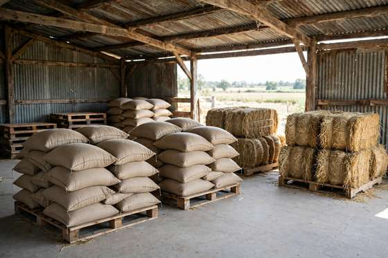
Feed sacks on pallets — dry, clean and off the floor
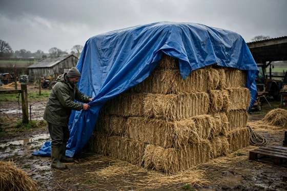
Cover outdoor stacks with a waterproof tarpaulin before the rain
Mould and Mycotoxins — Risks and Prevention
Mould grows wherever feed is damp, warm and exposed to air. Mould itself reduces palatability and digestibility — but the greater danger is mycotoxins, poisonous compounds produced by some moulds, including aflatoxins, deoxynivalenol (vomitoxin), zearalenone and fumonisins.
In dairy cattle, mycotoxins can lower feed intake and milk production, damage the liver, suppress the immune system and cause reproductive problems. Aflatoxin can pass into milk as aflatoxin M1, which is a food-safety risk for people. Some mycotoxins cannot be detected by smell or appearance alone.
Never feed visibly mouldy or spoiled feed. Mixing mouldy feed with good feed does not make it safe. If a large amount of feed is affected, ask your veterinarian for advice. Commercial mycotoxin binders exist, but they must be used only as prescribed by a veterinarian.
Prevention: harvest and store feed dry; seal silage airtight; keep storage areas clean and dry; control rodents and insects; check stored feed regularly for heating and mould; and feed out silage efficiently once a silo is opened.
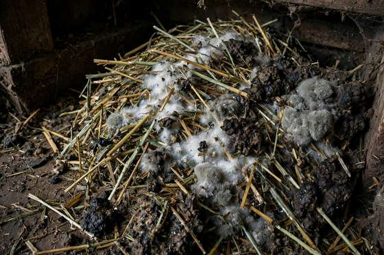
Spoiled, mouldy hay — white mould, dark and damp. NEVER feed it
Quality Assessment on the Farm
Every batch of feed should be checked before feeding. Three quick senses — sight, smell and touch — catch most problems in seconds.
Check
Good feed
Warning signs
Sight
Bright, natural colour — greenish-golden hay, golden silage; no mould or dust
Dark, bleached or blackened colour; visible mould; foreign material
Smell
Fresh, sweet smell for hay; pleasant acidic smell for silage
Musty, rotten, sour or burnt smell
Touch
Dry and loose; hay breaks cleanly; silage feels moist but not wet
Damp, hot or clumped; slimy texture; heating in the stack or bale
Animal response
Animals eat eagerly and finish the feed
Animals refuse, sort or leave feed — a strong warning sign
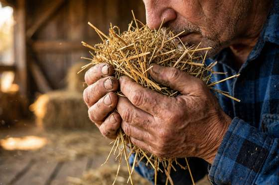
Look, smell, feel — check every batch before feeding
Farm checks catch spoilage, but only a laboratory analysis shows the true feeding value. A basic feed test usually reports the following — always compare values on a dry-matter (DM) basis.
Test
What it means
How to use it
Dry Matter (DM)
The feed without water — the part that contains all the nutrients
Compare all feeds and rations on a DM basis, not as-fed weight
Crude Protein (CP)
Total protein content of the feed
Check whether the ration meets the animals' protein needs; balance with protein feeds if low
Neutral Detergent Fibre (NDF)
Total fibre (hemicellulose, cellulose, lignin) — linked to intake
Higher NDF usually means lower intake; good hay and silage have moderate NDF
Acid Detergent Fibre (ADF)
The least digestible fibre (cellulose and lignin) — linked to digestibility
Lower ADF means more digestible feed and more energy for milk
Ash
Mineral content — high ash often means soil contamination
Very high ash lowers feeding value; check harvesting and handling
Send a representative sample — taken from several bales, bags or places in the stack — to a feed testing laboratory. Test before making a new ration, when changing suppliers, and whenever milk yield or animal health changes without an obvious cause.
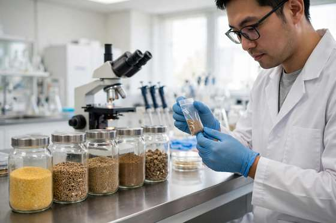
Laboratory analysis — the true feeding value, beyond what eyes and nose can tell
Preservation Methods Compared
Hay, silage and haylage all preserve green fodder — but they suit different weather, crops and farm sizes.
Method
Dry matter
How it works
Best for
Hay
About 85–90%
Dried in the field by sun and air; stored dry
Dry, sunny weather; easy handling and transport; long storage
Silage
About 30–35%
Fermented airtight by lactic acid bacteria; low pH preserves it
Wet weather or large volumes; maize and sorghum; high energy
Haylage
About 40–60%
Partly dried, then wrapped or sealed and fermented like silage
When full drying is not possible; smaller farms; bale wrapping
Hay is the simplest method but needs several dry days. Silage preserves more nutrients from the same crop and is not weather-dependent, but it needs airtight storage and careful management. Haylage sits in between — less drying than hay, less liquid than silage. Many farms use more than one method across the year.
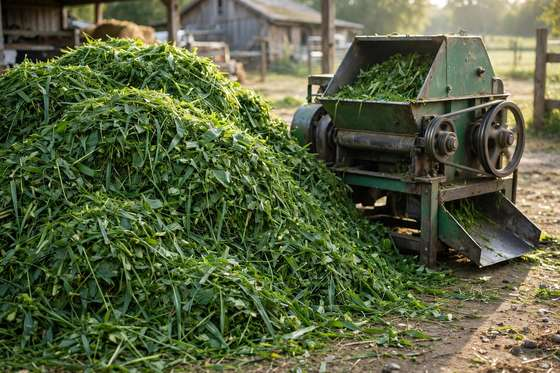
Fresh green fodder — preserve the surplus as hay, silage or haylage
Storage Losses and How to Reduce Them
Feed is lost at every stage — in the field, in the stack, in the store and at the feed bunk. The main causes are rain and moisture, heating and mould, rodents and insects, and poor handling. Uncovered outdoor stacks can lose a quarter or more of their dry matter over a season, while covered, well-managed storage keeps losses small.
1
Keep feed dry(Store under a roof or waterproof cover; repair leaks; never store damp feed)
2
Keep feed off the ground(Use pallets, raised platforms or a concrete floor — ground moisture spoils the bottom layer first)
3
Control rodents and insects(Seal gaps, keep stores clean, remove spilled feed, and use approved control measures)
4
Use the oldest feed first(First in, first out — label stacks and bins by date)
5
Seal silage properly and feed out efficiently(Keep the open face clean and smooth; do not leave silage exposed to air)
6
Reduce feeding losses(Use feed bunks or mangers instead of feeding on the ground; feed the right amount so little is left or trampled)
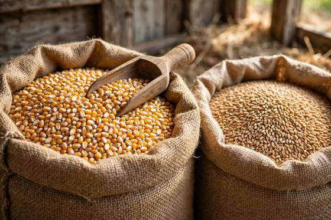
Dry grain in sacks — well dried, off the floor, protected from pests
Practical Farm Checklist
Use this checklist every week through the storage season.
✓
Check every batch before feeding(Look, smell, feel — and discard anything mouldy, rotten or heated)
✓
Walk the store and stacks weekly(Look for leaks, torn covers, heating, mould and pest damage)
✓
Keep covers and seals in good repair(Patch torn tarpaulins and silage plastic at once — a small hole spoils a large area)
✓
Record what you store(Note the crop, cutting date and quantity for every stack, silo and bin)
✓
Test feed in the laboratory(At least once per season, and before making a new ration)
✓
Watch the animals(Falling intake, sorting or a drop in milk can be the first sign of a feed problem — investigate the feed before anything else)
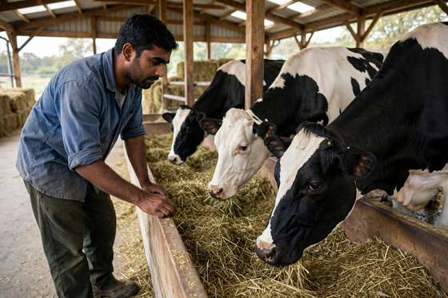
Watch the animals — falling intake is often the first sign of a feed problem
Conclusion
Feed quality is not decided at feeding time — it is decided at cutting, drying, baling, sealing and storing. Cut at the right stage, dry or ferment properly, store dry and covered, check every batch before feeding, and test in the laboratory when it matters. The farmers who protect their feed protect their milk, their animals and their profit.
References
National Research Council (NRC) – Nutrient Requirements of Dairy Cattle.
Merck Veterinary Manual – Mycotoxicoses in Animals.
FAO – Hay and Straw Conservation; Livestock Feed Resources.
Penn State Extension – Hay Making and Storage; Corn Silage Production and Management.
University of Wisconsin Extension – Forage Quality and Preservation.
Frequently Asked Questions
What is the ideal moisture level for safe hay storage?
Hay should be baled when its moisture is below 20 percent, ideally around 15 to 18 percent. Hay baled too wet heats up in the stack, grows mould and loses nutrients, and in severe cases can even catch fire through spontaneous heating. Always check moisture with a probe before baling, and never stack damp bales.
How do moulds and mycotoxins affect dairy cattle?
Moulds reduce feed intake and digestibility, and some moulds produce mycotoxins — poisonous compounds such as aflatoxins, deoxynivalenol, zearalenone and fumonisins. Mycotoxins can lower milk production, damage the liver, suppress immunity and cause reproductive problems. Aflatoxin can pass into milk as aflatoxin M1, which is a food-safety risk. Visibly mouldy feed should never be fed.
What do dry matter, crude protein, NDF and ADF mean on a feed analysis report?
Dry matter (DM) is the feed without water — all nutrients are compared on a DM basis. Crude protein (CP) is the total protein content, used to check whether the ration meets the animals' needs. Neutral detergent fibre (NDF) measures total fibre and is linked to how much the animal will eat: higher NDF usually means lower intake. Acid detergent fibre (ADF) measures the least digestible fibre (cellulose and lignin): lower ADF means the feed is more digestible and gives more energy.
What is the difference between hay, haylage and silage?
Hay is dried in the field to about 85 to 90 percent dry matter and stored dry. Silage is fermented green fodder preserved airtight at about 30 to 35 percent dry matter, with lactic acid bacteria lowering the pH. Haylage is in between: partly dried fodder, about 40 to 60 percent dry matter, wrapped or sealed and fermented like silage. Hay needs dry weather to make; silage and haylage need airtight storage.
How can storage losses be reduced on a dairy farm?
Store feed under a roof or a waterproof cover, off the ground on pallets, and keep the store dry and well ventilated. Control rodents and insects, repair roof leaks, and use the oldest feed first. Cover silage faces and bale stacks properly, and keep storage areas clean. Uncovered outdoor stacks can lose a quarter or more of their dry matter, while covered, well-managed storage keeps losses small.
How can I tell if my hay is good or bad?
Good hay is greenish-golden, smells fresh and sweet, and feels dry and loose in the hand. Bad hay is dark, dusty or mouldy, smells musty or rotten, feels damp or hot, and may be clumped together. If you are not sure, do not feed it — ask your veterinarian or send a sample to a feed laboratory for testing.
Can I feed mouldy fodder to my cows if I mix it with good fodder?
No. Mixing mouldy fodder with good fodder does not make it safe — the mycotoxins are still there, and the animals may still eat them. Mouldy or rotten feed should be discarded. If a large amount of feed is affected, ask your veterinarian for advice before deciding what to do.
چارہ خراب ہونے سے کیسے بچایا جائے؟
چارے کو ہمیشہ خشک اور ہوادار جگہ پر رکھیں، زمین سے اوپر پیلٹ یا اینٹوں پر رکھیں اور بارش سے بچانے کے لیے چھت یا ترپال سے ڈھانپیں۔ گیلا یا نم چارہ کبھی ذخیرہ نہ کریں، چوہوں اور کیڑوں سے بچاؤ کریں اور پرانا چارہ پہلے استعمال کریں۔ ہر بار کھلانے سے پہلے چارے کو دیکھیں، سونگھیں اور چھو کر چیک کریں — اگر چارہ پھپھوندی والا، بدبودار یا گرم محسوس ہو تو اسے جانوروں کو ہرگز نہ کھلائیں۔
Key Takeaway
Feed quality decides milk and profit: cut at the right stage, bale hay below 20% moisture, seal silage airtight, store everything dry and covered, check every batch by look, smell and feel, and never feed mouldy feed. Follow current local veterinary authority guidance and feed supplier instructions.